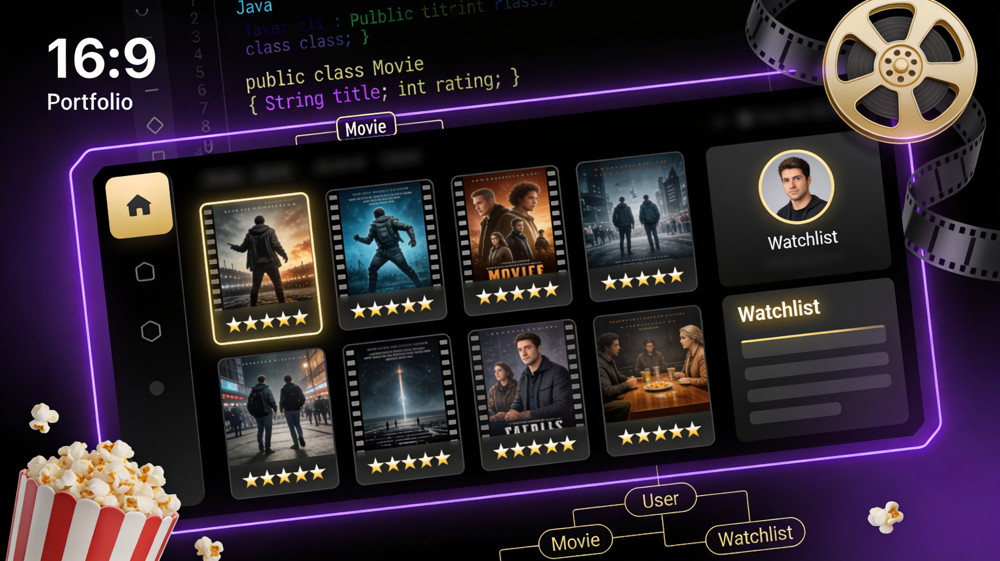
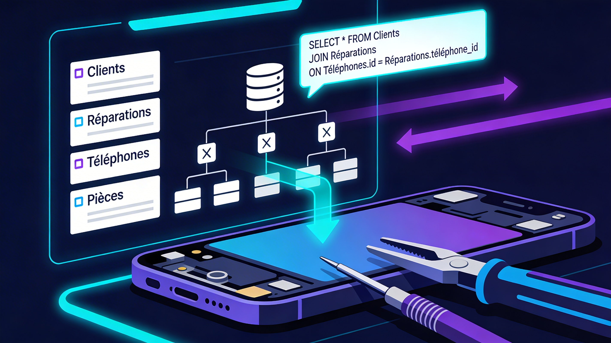
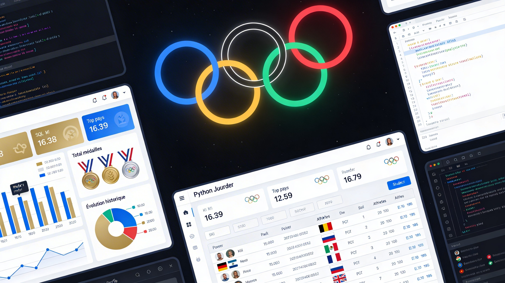
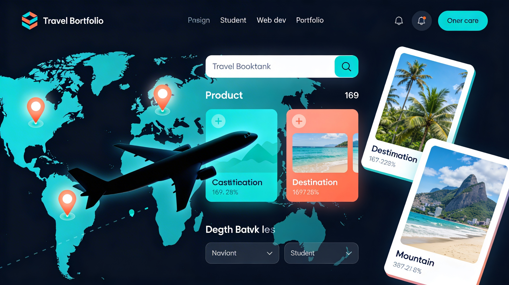

Disponible dès le 1er août 2026 · Alternance BUT 2
Étudiant BUT Informatique · IUT d'Orsay · Université Paris-Saclay
Ayoub Ech-Chaayby
J'ai commencé à coder pour comprendre comment les choses fonctionnent. Et je n'ai pas arrêté depuis. Du Java objet aux pipelines ETL, j'explore ce que les données peuvent révéler. Je cherche une alternance où je peux apprendre au contact de vrais projets, pas juste dans les cours.

01 — Qui suis-je ?
À propos
Ayoub Ech-Chaayby, BUT Informatique Parcours A à l'IUT d'Orsay. Avant ça, un bac général mention Bien à Chartres avec l'anglais et les maths en spécialités, option maths expertes. Rien de très glamour, mais c'est là que j'ai appris à aimer résoudre des problèmes.
Ce qui m'a attiré dans l'informatique, c'est la sensation que tout est explicable. Pas de magie, juste de la logique. Mais plus j'avance, plus je réalise que ce qui est vraiment fascinant, c'est ce qu'on peut faire avec des données brutes : les nettoyer, les modéliser, et en extraire quelque chose d'utile.
Aujourd'hui je construis des bases solides en Java, SQL, C++ et Python. Demain, je veux aller vers la Data et l'IA, pas pour suivre une mode, mais parce que c'est là que les questions les plus intéressantes se posent.
Langues
FrançaisNatif
AnglaisC1
ArabeB1
EspagnolB1
02 — Stack technique
Compétences
Langages & Dev
JavaC++C#
PythonHTML5CSS3
JavaScriptJava Swing
POOAlgorithmique
Bases de données
SQL / MySQLPostgreSQL
OracleSQLite
MongoDBMCD / MLD
ETLJupyterLab
Outils & Méthodes
Git / GitHubGitLab
IntelliJ · VS CodeFigma
UML · Draw.ioTDD / JUnit
Agile / ScrumCI/CD
Systèmes & Algo
Linux / ShellSSH · RPi
Réseaux TCP/IPIHM
BFS / DFSStructures de données
Complexité algorithmique
03 — Réalisations
Mes Projets
Cliquez sur une carte pour la retourner
Projets

App. gestion médias
Un Letterboxd maison en Java, avec de vraies classes, de vraies interfaces, et des tests qui cassent exactement quand il le faut.
Retourner →
App. gestion médias
Points clés
- Pattern FactoryMedia, classes encapsulées
- IHM Swing event-driven, maquettes Figma
- GitLab, refactoring, code production-ready
- Tests utilisateurs (5 personnes)
Améliorations
- Recommandation personnalisée
- API externe (TMDB, OpenLibrary)
⏳ En cours

BDD Réparateur Téléphones
Toute une boutique de réparation modélisée en base relationnelle, du client à la pièce détachée, sans une seule anomalie en 3NF.
Retourner →
BDD Réparateur Téléphones
Points clés
- Modélisation MCD → MLD → LDD
- Vues, procédures stockées, droits
- Rapports d'exploitation agrégés
Améliorations
- Interface web d'administration

BDD Jeux Olympiques
Des données olympiques brutes, une pipeline ETL complète, et des KPI qui racontent une histoire. Tout visualisé sous JupyterLab.
Retourner →
BDD Jeux Olympiques
Points clés
- Collecte, nettoyage, transformation ETL
- Vues, triggers, gestion des rôles
- KPI décisionnels Jupyter
Améliorations
- Dashboard interactif (Streamlit)

Jeu vidéo 2D
Faire bouger un sprite à l'écran en C++ sans framework : collision, physique, SDL2. C'est humiliant et grisant à la fois.
Retourner →
Jeu vidéo 2D
Points clés
- Boucle de jeu complète et stable
- Gestion des collisions et déplacements
- Événements clavier/souris
- Graphismes SDL2, optimisation mémoire dynamique
💻
Ce portfolio
Zéro framework, zéro template, juste du HTML, du CSS et de l'entêtement. Ce que vous regardez en ce moment.
Retourner →
Ce portfolio
Points clés
- Animations CSS pures (particules, shimmer, float)
- Menu burger mobile avec overlay fullscreen
- Reveal au scroll avec stagger sur les enfants
Améliorations prévues
- Mode clair / sombre
- Traduction anglaise
- Section veille technologique

Site Agence de Voyage
Une agence fictive futuriste habillée de HTML/CSS pur. Recueil de besoins, maquette, et un design qui donne envie de partir quelque part.
Retourner →
Site Agence de Voyage
Points clés
- Design responsive et mobile-first
- Navigation fluide entre les destinations
- Mise en page futuriste, CSS animations
04 — Mon histoire
Parcours
2025 – 2028
Formation
BUT Informatique — Parcours A
IUT d'Orsay · Université Paris-Saclay
Première vraie confrontation avec un programme exigeant : cours intensifs, projets en groupe sous contrainte de temps, et la découverte que Google ne remplace pas la compréhension. C++, Java, C#, SQL, UML, Linux, HTML/CSS.
2022 – 2025
Formation
Baccalauréat Général — Mention Bien
Lycée Fulbert · Chartres (28)
Mathématiques et Anglais en spécialités, option maths expertes, ça m'a appris à raisonner proprement avant même de toucher du code.
Juil–Août 2025
Expérience
Manutentionnaire Intérimaire — Bricomarché
Garancières-en-Beauce
Un été à déplacer des palettes et à réaliser que l'organisation logistique, c'est de l'algorithmique physique. Suivi des stocks, optimisation des flux, travail en équipe.
2023 – 2025
Expérience
Chef d'Équipe — McDonald's
Ablis
Deux ans à gérer une équipe en heure de pointe. Les données de caisse, les plannings à jongler, les imprévus à absorber. J'ai appris à décider vite et à garder la tête froide.
2022 – 2026
Bénévolat
Accompagnement scolaire
Auneau (28)
Expliquer un problème à quelqu'un qui ne comprend pas, c'est souvent la meilleure façon de vérifier qu'on l'a soi-même compris. Suivi de progression via Excel, supports numériques personnalisés.
Janv. 2022
Stage
Stage d'observation — Legendre
Auneau (28)
Premier contact avec un vrai environnement professionnel : logistique, SAV, affrètement, et Excel comme seul outil de gestion. Formateur à sa façon.
05 — Projet professionnel
Mes Ambitions
01
Court terme
Décrocher une alternance
Trouver une entreprise où je ne suis pas juste un stagiaire qui prend des notes, mais quelqu'un qui contribue à de vrais projets dès le premier jour.
02
Moyen terme
Intégrer une école d'ingénieurs
Mon BUT est une base, pas une fin. Après, une école d'ingé spécialisée Data & IA pour aller plus loin que la surface du ML.
03
Long terme
ML Engineer · Data Scientist
Construire des systèmes qui apprennent par eux-mêmes. Pas comme utilisateur d'un outil existant, comme quelqu'un qui comprend vraiment ce qu'il y a sous le capot.
06 — Hors écran
Centres d'intérêt
Mangas
One Piece depuis le lycée, Jujutsu Kaisen, Naruto. J'aime les histoires qui prennent le temps de construire quelque chose de grand avant de tout faire exploser.
Football
Je joue depuis tout petit. Ce que j'aime dans le foot, c'est la tactique : comprendre pourquoi une équipe gagne avant même le coup de sifflet final.
Musculation
Un programme de séance, c'est un algorithme. Charger la barre, noter les reps, ajuster la semaine d'après. La logique est exactement la même qu'en dev.
Sports de combat
La boxe et le MMA m'ont appris une chose : l'intelligence bat la force brute. Même leçon que face à un bug difficile à débugger.
07 — Échangeons
Contact
Si un de mes projets vous a parlé, ou si vous cherchez quelqu'un qui ne recule pas devant les problèmes complexes, on peut en parler. Je réponds vite.